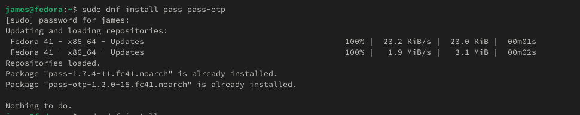
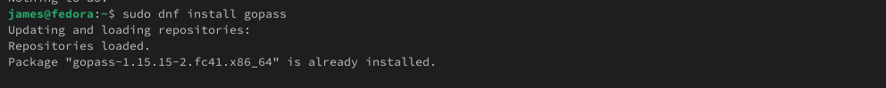
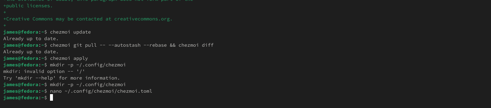

Кусоро Майова Джеймс
НК-Абд-01-24
Цель данной лабораторной работы — научиться пользоваться менеджером паролей и Chezmoi
dnf install pass pass-otp
dnf install gopass 
gpg --list-secret-keyspass init omotole47@gmail.com
pass git init
pass git remote add origin git@github.com:Ushie47/study_2024-2025_os-intro.gitДля синхронизации выполняется следующая команда:
pass git pull
pass git pushcd ~/.password-store/
git add .
git commit -am 'edit manually'
git pushСначала мне нужно скачать плагин BrowserPass в браузере, затем скачать интерфейс для взаимодействия с браузером в терминале с помощью команды
dnf copr enable maximbaz/browserpass
dnf install browserpassНам нужно создать пароль, а затем отобразить пароль для конкретного файла в терминале с помощью команды
pass insert [study]/[github]
pass [study]/[github]Я установил дополнительное программное обеспечение
Установка бинарного файла. Скрипт определяет архитектуру процессора и операционную систему и загружает необходимый файл с помощью wget
sh -c "$(wget -qO- chezmoi.io/get)"Я создал свой собственный репозиторий для конфигурационных файлов на основе шаблона:
gh repo create dotfiles --template="yamadharma/dotfiles-template" --privateЯ инициализировал его с помощью своего github
chezmoi init git@github.com:Ushie47/dotfiles.gitИзвлекать изменения из репозитория и применять их с помощью одной команды
chezmoi updateЧтобы извлечь последние изменения из репозитория и увидеть, какие изменения не применяются фактически
chezmoi git pull -- --autostash --rebase && chezmoi diffЧтобы применить изменения, мы используем команду
chezmoi applyВы можете автоматически фиксировать и отправлять изменения в
исходный каталог в репозитории.По умолчанию эта функция отключена.Чтобы
включить его, добавьте в файл конфигурации
следующее:~/.config/chezmoi/chezmoi.toml
[git] autoCommit = true autoPush = true 
Вывод: из этой лабораторной работы я узнал, как использовать chezmoi для создания файла конфигурации и как использовать менеджер паролей